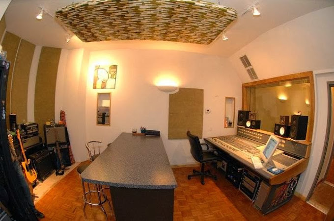
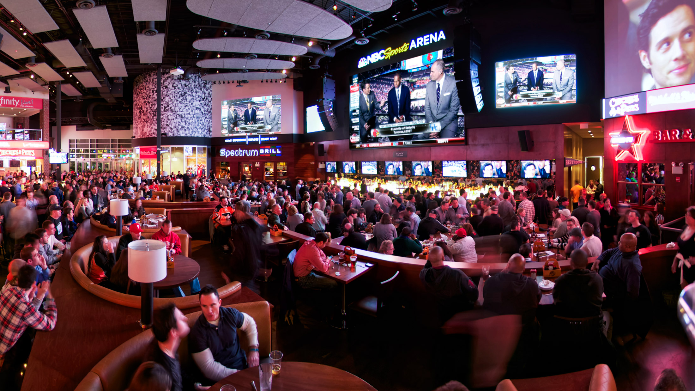

Well things with holes like pillows or foam are good for trapping sound, also things like metal are bad as the refelect sound.
Sine Studios; I had the plesure of visting sine studios and this bulding uses uneven walls to eliminate echos
The Philedelphia Orchestra; Even The insterments' placments are desined for sound
Xfinity Live; Desinged to have multible viewing angles yet with no overlapping sound
